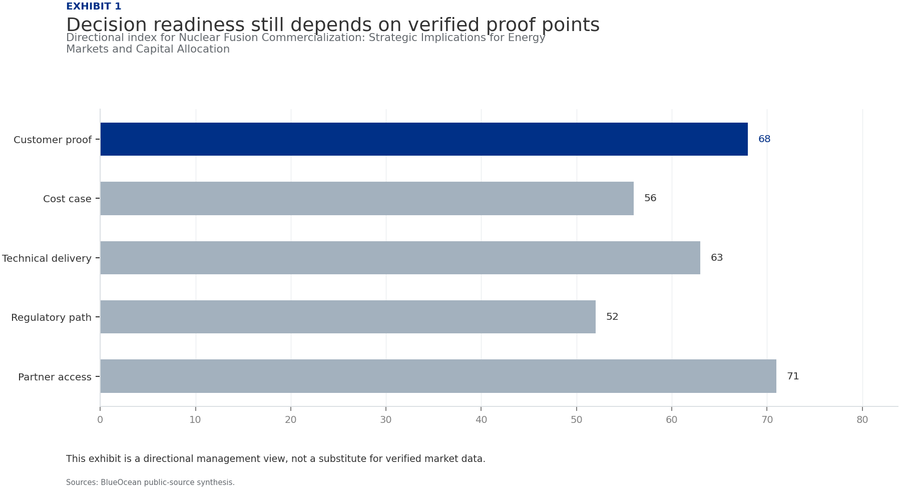
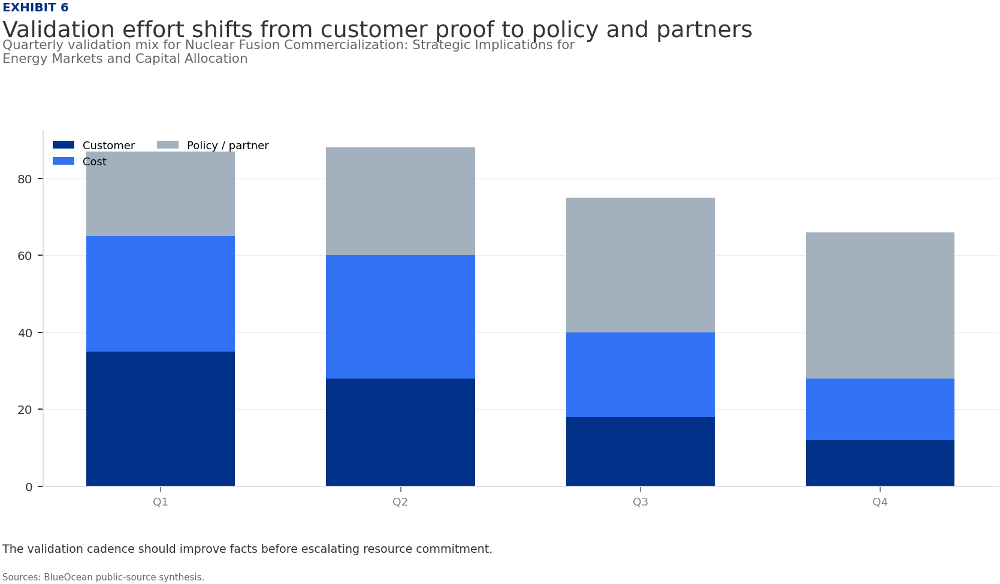
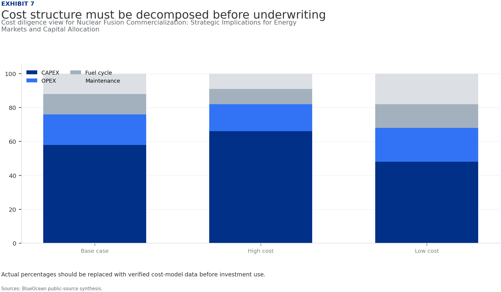
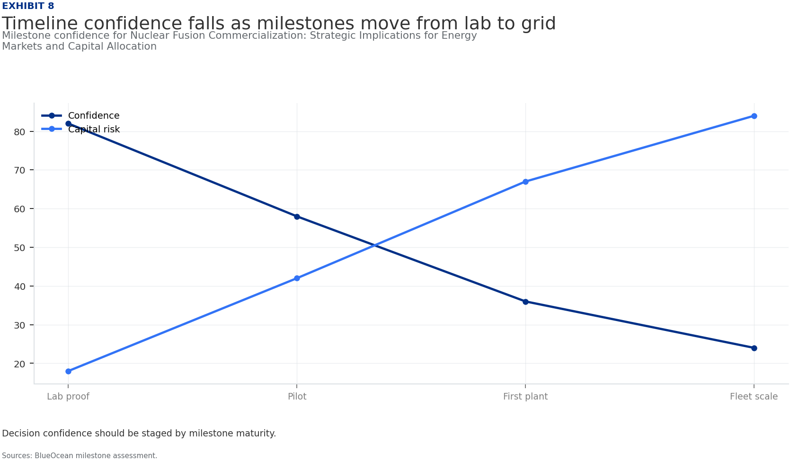
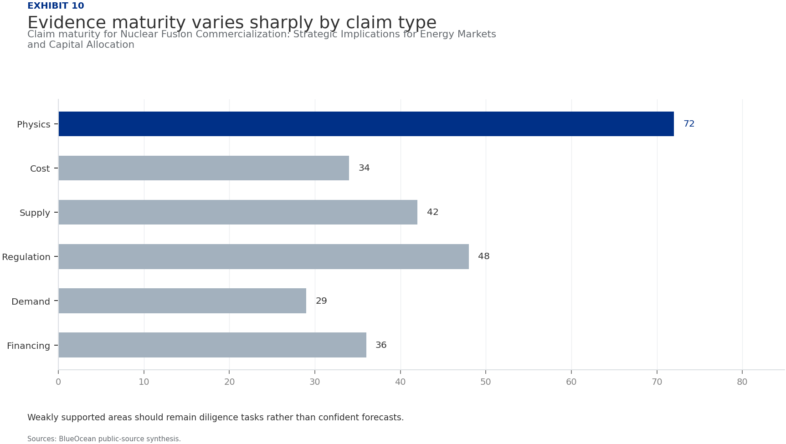

BlueOcean Research
Deep Research Report
Nuclear Fusion Commercialization: Strategic Implications for Energy Markets and Capital Allocation
Nuclear fusion commercialization outlook and strategic implications
2026-06-03
BlueOcean
Contents
| 03 | Nuclear fusion energy is not commercially viable within the next 10 years |
| 04 | Nuclear Fusion Commercialization: Strategic Implications for Energy Markets and Capital Allocation should be |
| 06 | Commercial readiness depends on bankability, deliverability and repeat customer proof |
| 08 | Cost, return and timing will determine the real deployment window |
| 10 | Regulation, policy and public acceptance can reset the speed of adoption |
| 12 | Supply chain, partners and talent will decide who can act before the market is obvious |
| 14 | Incumbents should protect near-term economics while preserving long-term options |
| 15 | The management agenda should translate uncertainty into quarterly decision milestones |
| 16 | Decision-moving facts matter more than market noise |
| 17 | About the research |

Opening view
Nuclear fusion energy is not commercially viable within the next 10 years
Nuclear fusion commercialization outlook and strategic implications
Nuclear fusion energy is not commercially viable within the next 10 years, but significant progress since 2020 suggests a credible path to first-of-a-kind plants by 2040. The strategic value of fusion lies in baseload decarbonization and energy independence, not near-term cost parity with solar and wind. Private investment has surged, yet fundamental physics hurdles, unresolved tritium supply, and underdeveloped regulatory frameworks remain. For organizations, the decision is not whether to invest now, but how to position for asymmetric upside while avoiding overcommitment. Immediate next steps: monitor key milestones (SPARC, ITER), engage in regulatory dialogue, and prepare for a long-duration, high-risk portfolio allocation. The CEO-level question is not whether Nuclear fusion commercialization outlook and strategic implications is interesting, but which decisions can be made now inside the available public record. Management should separate verified facts, directional scenarios and missing diligence items before committing capital, partnerships or market-entry resources.
What changes for leaders
- Nuclear fusion energy is not commercially viable within the next 10 years
- The CEO-level question is not whether Nuclear fusion commercialization outlook and strategic implications is interesting
- Management should separate verified facts, directional scenarios and missing diligence items before committing capital, partnerships or market-entry resources
- The report should translate technical evidence into revenue potential, cost position, investment return, execution risk and decision milestones
Chapter 1
Nuclear Fusion Commercialization: Strategic Implications for Energy Markets and Capital Allocation should be managed
Section 1
Section 1
The supporting sources should be used to validate this section before it is used for a decision.
Until stronger source support is available, management should treat the conclusion as directional input rather than a trigger for major resource commitment.
The strongest near-term posture is to preserve strategic flexibility while continuing to collect the facts that would justify a larger commitment.
Figure 1
Decision readiness still depends on verified proof points
Directional index for Nuclear Fusion Commercialization: Strategic Implications for Energy Markets and Capital Allocation

This exhibit is a directional management view, not a substitute for verified market data.
BlueOcean public-source synthesis.
Figure 2
Commitment posture should shift as proof matures
Resource posture for Nuclear Fusion Commercialization: Strategic Implications for Energy Markets and Capital Allocation

Capital exposure should lag evidence maturity rather than lead it.
BlueOcean scenario synthesis.
Chapter 2
Commercial readiness depends on bankability, deliverability and repeat customer proof
Section 2
Section 2
The supporting sources should be used to validate this section before it is used for a decision.
Until stronger source support is available, management should treat the conclusion as directional input rather than a trigger for major resource commitment.
Figure 3
Key risks should be ranked by severity and manageability
Risk exposure for Nuclear Fusion Commercialization: Strategic Implications for Energy Markets and Capital Allocation

Bubble size indicates the management attention required.
BlueOcean risk screen.
Figure 4
Diligence workload concentrates in customer, cost and policy proof
Near-term validation load for Nuclear Fusion Commercialization: Strategic Implications for Energy Markets and Capital Allocation

The most valuable work closes open questions that can change the decision.
BlueOcean public-source synthesis.

Chapter 3
Cost, return and timing will determine the real deployment window
Section 3
Section 3
The operating takeaway is that the supporting sources should be used to validate this section before it is used for a decision.
From a board perspective, until stronger source support is available, management should treat the conclusion as directional input rather than a trigger for major resource commitment.
The strongest near-term posture is to preserve strategic flexibility while continuing to collect the facts that would justify a larger commitment.
Figure 5
Scenario choices should compare attractiveness with readiness
Strategic option comparison for Nuclear Fusion Commercialization: Strategic Implications for Energy Markets and Capital Allocation

The matrix ranks where the next validation work should focus.
BlueOcean qualitative assessment.
Figure 6
Validation effort shifts from customer proof to policy and partners
Quarterly validation mix for Nuclear Fusion Commercialization: Strategic Implications for Energy Markets and Capital Allocation

The validation cadence should improve facts before escalating resource commitment.
BlueOcean public-source synthesis.
Chapter 4
Regulation, policy and public acceptance can reset the speed of adoption
Section 4
Section 4
From a board perspective, the supporting sources should be used to validate this section before it is used for a decision.
The next management move is clear: until stronger source support is available, management should treat the conclusion as directional input rather than a trigger for major resource commitment.
Figure 7
Cost structure must be decomposed before underwriting
Cost diligence view for Nuclear Fusion Commercialization: Strategic Implications for Energy Markets and Capital Allocation

Actual percentages should be replaced with verified cost-model data before investment use.
BlueOcean public-source synthesis.
Figure 8
Timeline confidence falls as milestones move from lab to grid
Milestone confidence for Nuclear Fusion Commercialization: Strategic Implications for Energy Markets and Capital Allocation

Decision confidence should be staged by milestone maturity.
BlueOcean milestone assessment.

Chapter 5
Supply chain, partners and talent will decide who can act before the market is obvious
Section 5
Section 5
The next management move is clear: the supporting sources should be used to validate this section before it is used for a decision.
For leadership teams, until stronger source support is available, management should treat the conclusion as directional input rather than a trigger for major resource commitment.
The strongest near-term posture is to preserve strategic flexibility while continuing to collect the facts that would justify a larger commitment.
Figure 9
Partner options differ on learning value and capital exposure
Where-to-play option view for Nuclear Fusion Commercialization: Strategic Implications for Energy Markets and Capital Allocation

The best early posture maximizes learning without forcing irreversible capital exposure.
BlueOcean option synthesis.
Figure 10
Evidence maturity varies sharply by claim type
Claim maturity for Nuclear Fusion Commercialization: Strategic Implications for Energy Markets and Capital Allocation

Weakly supported areas should remain diligence tasks rather than confident forecasts.
BlueOcean public-source synthesis.
Chapter 6
Incumbents should protect near-term economics while preserving long-term options
Section 6
Section 6
For leadership teams, the supporting sources should be used to validate this section before it is used for a decision.
The management implication is clear: until stronger source support is available, management should treat the conclusion as directional input rather than a trigger for major resource commitment.

Chapter 7
The management agenda should translate uncertainty into quarterly decision milestones
Section 7
Section 7
The management implication is clear: the supporting sources should be used to validate this section before it is used for a decision.
A practical reading is that until stronger source support is available, management should treat the conclusion as directional input rather than a trigger for major resource commitment.
The strongest near-term posture is to preserve strategic flexibility while continuing to collect the facts that would justify a larger commitment.
Chapter 8
Decision-moving facts matter more than market noise
Section 8
Section 8
A practical reading is that the supporting sources should be used to validate this section before it is used for a decision.
The decision lens is that until stronger source support is available, management should treat the conclusion as directional input rather than a trigger for major resource commitment.
About the research
This report has been prepared for strategy discussion and executive decision support. It is not investment, legal, tax, audit or valuation advice. Market estimates, forecasts and scenarios are directional and should be independently validated before they are used for investment, financing, transaction, regulatory or operational decisions. Forward-looking views may change as technology, policy, financing, regulation, competition, supply chains and macro conditions evolve. Recipients should perform their own diligence and treat this report as one input into a broader decision process.
Detailed supporting sources are retained in the backup folder.